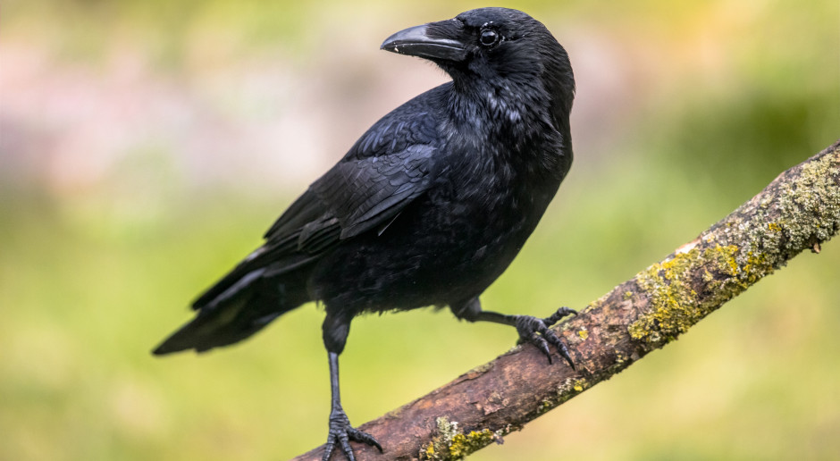

Lista faktów o wronach:
- Są bardzo mądre. - Mają doskonałą pamięć – rozpoznają ludzkie twarze i potrafią zapamiętać osoby, które zrobiły im krzywdę
- W Polsce najpowszechniejsza jest wrona siwa.
- Dożywają w naturze do 20 lat.
- Wrona to wieloznaczny symbol kojarzony ze śmiercią, mądrością, zmianą i wiadomościami.
- Lubią zabawę – na przykład zjeżdżają z zaśnieżonych dachów dla czystej przyjemności.

Różnice pomiędzy innymi korwidami.
AAUIFHGFAWUGFAEUGFT7QWRW6RFw7f7wfda7dfustdf7erfa7fawfd7fw76fASGDAUSFDAQWFDQFWDTFATDFYEFRAT7TDFSTF
| Tekst przykładowy | Tekst przykładowy | Tekst przykładowy |
|---|---|---|
| Tekst przykładowy | Tekst przykładowy | Tekst przykładowy |